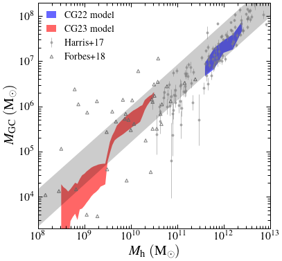
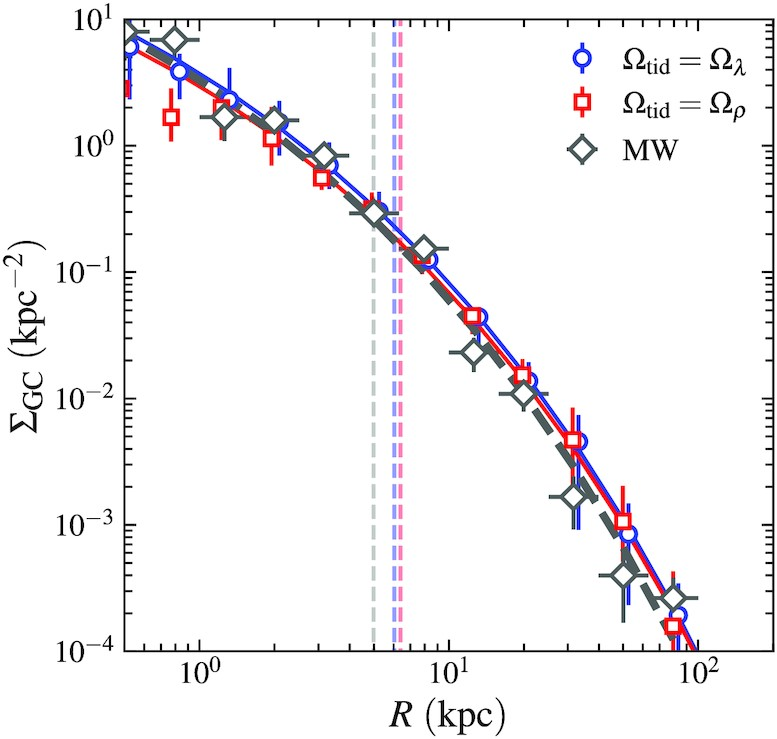
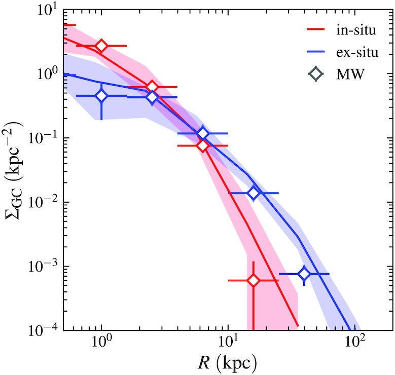
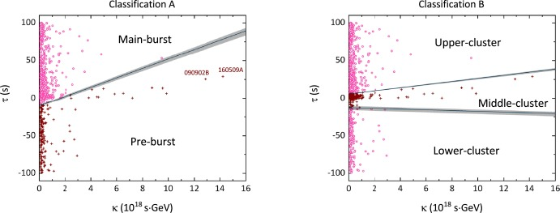

Ongoing
See Chen & Gnedin (2023b) for detais.
 |
Evolution of GCs during the last major merger of an Andromeda analogue.
We make modifications to the Chen & Gnedin (2022) to adjust it to satellite galaxies in the local group from a suite of collisionless simulations. We validate the near-linear GC mass-halo mass correlation down to Mh ~ 108 Msun, where the majority of dwarf galaxies do not host any cluster. By studying two Fornax-like satellites in the simulations, we reproduce the radial profile of GCs in Fornax and show that observational samples can be notably biased by incompleteness below detection limit and at large radii. See Chen & Gnedin (2023a) for detais.
|  |
Near-linear GC mass-halo mass correlation.
The advent of the Gaia mission has enabled detailed kinematics studies of the Galactic GCs and revolutionized our understanding of the connections between GC properties and galaxy assembly. We update the GC formation model developed by Choksi & Gnedin (2019) by assigning GCs to particles in the Illustris TNG simulation based on age and location. This adds spatial and kinematic information to the modeled GCs. The model successfully reproduces the radial distribution and various kinematic properties of the Galactic GCs. We also analyze GCs from different origins: In outer galaxy, ex-situ clusters are more dominant than the clusters formed in-situ, which explains the gradient of GC metallicity. See our first paper (Chen & Gnedin 2022) for details.
|  |  |
Radial profiles of all modelled GCs (left) and split by in-situ/ex-situ (right).
Together with Hui Li and Mark Vogelsberger, I perform a suite of simulations to investigate the effects of initial density profiles on the evolution of star clusters in GMCs. We find that the uniform profile follows a "hierarchical" cluster formation mode, while the steep power-law profiles show an "accretion" dominated mode. These two cluster formation modes lead to different proprieties of the most massive clusters in GMCs. See our first paper (Chen, Li, & Vogelsberger 2021) for details.
 |
 |
"Hierarchical" (left) and "accretion" (right) modes for cluster formation.
Previous
Based on the cosmic light speed variation, I found a novel pre-burst stage for GRBs. I also employed a primary clustering method of machine learning to classify this stage with the data from the Fermi telescope. The work was completed in late 2019 but was accepted for publication in 2021 due to the COVID-19 pandemic (see, Chen and Ma 2021).
|  |
Two classifications of GRB photons. Classification A distinguishes pre-burst from main-burst.